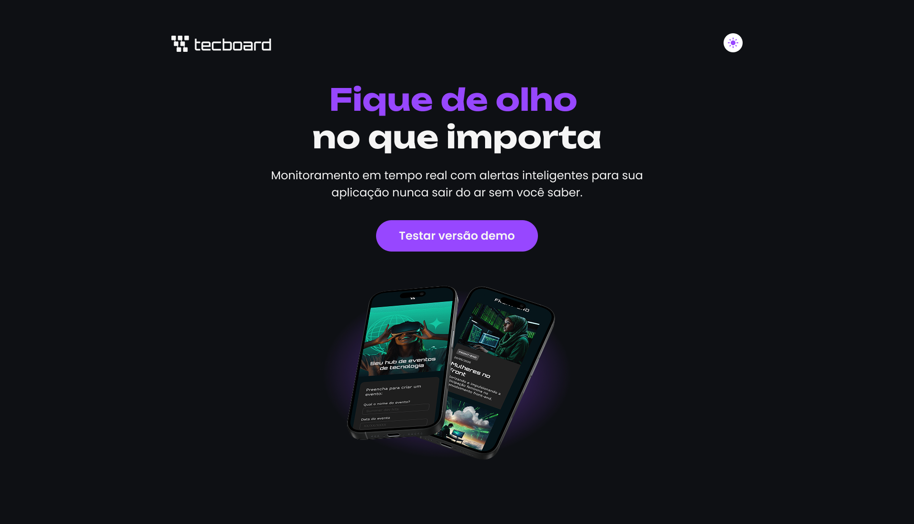

Tecboard
Projeto de um curso da Alura em que construí, em HTML e CSS, uma landing page a partir de um layout feito no Figma.
Sobre o projeto
O Tecboard é uma landing page de um produto de monitoramento em tempo real, com alertas para aplicações. O layout foi feito no Figma e disponibilizado pela instrutora do curso, e o meu trabalho foi transformar esse design em uma página em HTML e CSS. Desenvolvi o site para ganhar experiência em HTML e CSS, responsividade e outras práticas de front-end, partindo de um design pronto. O botão da página é só visual e não executa nenhuma ação.
Layout e resultado

Layout original do curso, disponibilizado no Figma Community (abre em nova aba)
Tecnologias
- HTML: estrutura da página.
- CSS: layout e responsividade, seguindo o Figma.
- Figma: o layout de referência, disponibilizado no curso.